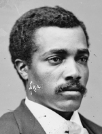

|

|

|
|
|
Josiah Thomas Walls, Florida's only Reconstruction black congressman, was born a
slave in Winchester, Virginia. At the outbreak of the Civil War, he was
impressed into labor as a servant in the Confederate army. Captured by Union
forces, he was sent to Harrisburg, Pennsylvania, where he received some
schooling, and enlisted in 1863 as a private in Company F, 3rd U.S. Colored
Infantry. He rose to the rank of sergeant and was mustered out in Florida in
1865.
In Florida, Walls went into truck farming and lumbering and quickly
prospered. The 1870 census reported him as owning no property, but thanks to his
salary as a congressman he was able, in 1873, to purchase for $5,000 a large
plantation formerly owned by Confederate general James W. Harrison. He also
practiced law and opened a law partnership in 1874 with black political leaders
Henry Harmon and William U. Saunders. In 1873, he purchased the Gainesville
New Era, making it the state's first black-owned newspaper.
Walls attended the Florida Republican convention of 1867, and was elected
from Alachua County to the constitutional convention of 1868. He served in the
Florida Assembly, 1868-69, and Senate, 1870, and was mayor of Gainesville in the
early 1870s. In 1870 he was elected to Florida's only congressional seat,
serving from December 1871 to January 1873, when he was unseated in a challenge
by his Democratic opponent. He was again elected in 1872, serving 1873-75, and
was reelected but not seated because of alleged intimidation of voters in 1874.
In Congress, he avidly promoted internal improvements in Florida, introducing
many bills for grants of public lands, river and harbor improvements, and
encouragement of immigration, most of which, however failed to emerge from
committee.
Walls remained a prominent figure in the state after Reconstruction. He
served again in the state Senate 1877-79, then devoted himself to his plantation
of orange groves. In 1883 he was described as the state's largest truck farmer.
He unsuccessfully ran for Congress in 1884 and for the state Senate in 1890. In
1892, he became an active member of the Populist party. A freeze in 1895 wiped
out his agricultural enterprise. At the turn of the century, Walls became
director of the college farm at Florida A&M University at Tallahassee. He died
poor and in complete obscurity; no obituary was published in any Florida
newspaper.
Source: Eric Foner, Freedom's Lawmakers: A Directory of Black
Officeholders during Reconstruction (New York: Oxford University Press,
1993), 222-23.
|